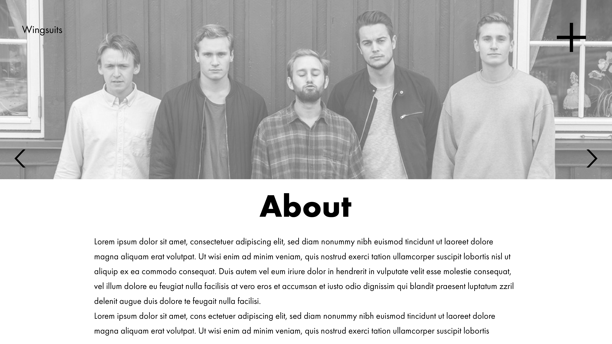

Our Client
- Client Name: Wingsuits (band)
- Contact Person: Jørgen Thorsnes

Purpose, Goals and Audience
The site’s purpose is to convey information about the band Wingsuits. The band wishes to be acknowledged internationally, meaning the site will be written in English. The band want the website to promote and inform about concerts, themselves, their music, and also present images and music videos. They also want the website to display and promote merchandise. The goal will be to make the visitors want to listen to Wingsuits' music, make the visitors interested in getting to know the band, and promote what they have to offer.
There are two main groups within the websites audience. One group of the audience are the people who are interested in knowing more about Wingsuits, especially people who wants to go to their concerts. Their main fan base are students in ages 19-30 who enjoys new pop/indie/rock music, so the website must be aimed especially at this audience. Another part of the audience is booking-agents and concert-arrangers who want to discover new bands and get in contact with Wingsuits. This should also be taken into consideration when designing the website, and could possibly collide with the other main audience group. Wingsuits also wants to reach out internationally, so the audience can be people from all over the globe.
Navigation Structure
Users that enter our website’s URL lands at our homepage (index.html). Navigation from the homepage is provided by a menu containing anchor tags for all the other webpages. The same menu will be found in all other pages on our website. Also, the menu button will be positioned top right in all pages, open with the same animation in all pages and contain the same elements in all pages. As shown in the sketches below, the homepage will contain very few elements. Thus, the menu will be one of the first elements a user will spot in the homepage. In this way, we ensure that the users know how to navigate around from page to page by providing a consistent layout for our navigation.
The reason why we chose to have an all-to-all navigation is because the goal for the website mainly is to give the user positive associations to Wingsuits, contrasted to a website that is meant for selling tickets or hiring people for a job. We want to give the user the freedom to explore the webpage on its own, through an intuitive and visually appealing user interface.
Page layout and apperance
Every page will have a basic universal design. There will be a “navbar” with height 100px on top of every page. The width will be the same as viewports width, and it will have invisible background. In the left of the banner the text “Wingsuits” with font size 24 will always be displayed. In the right of the banner there will be a menu button, designed as a black plus icon. When the menu button is pressed, it rotates and becomes an “X”, a menu will also be displayed when the button is pressed. When the “X” is pressed the menu disappears. On the bottom of the page, in the center of the viewport, there will be a footer displaying the text “© Wingsuits 2018” with font size. The footer will have invisible background. The footer will be always be below the content of the page. If the content takes up more space than the viewport height, the footer will be pushed down by the content.
The font-family of the website will be: Futura, "Trebuchet MS", Arial, sans-serif. The colors used on text and buttons will be black and white, as this is requested by Wingsuits. The buttons in the menu will have white background with opacity 80% and black left-aligned text. When hovering over a button in the menu, it will turn black, and the text will become white. The font-size of the button-text will be: The menu will be responsive and always fit 70% of the viewports width and 70% of the viewports height and be in the center of the page’s width and height, with 20px padding on top.
The plus sign ###ADD SOME INFO WHEN AVAILABLE###
This layout is inspired from several other bands’ websites, where these bands have a similar genre and audience to Wingsuits. This is to make it easy to find information about Wingsuits and their music, and also make the website visually intriguing for the audience. Because the design is similar to similar bands’ websites, visitors in our audience might have experience with similar sites, and will know how to navigate and find information.
Content
Homepage - index.html

This page will be the first page a visitor sees. The page will have a video-background with clouds passing by in the background. The video element will be auto played, looped, muted, and responsive relative to the viewport, and have the first frame of the body as a poster for when the visitor’s browser doesn’t support videos. The video will be relatively short, so it does not take up much space, and loads fast. Wingsuits’ Logo will be displayed at the center of the page, responsive relative to the viewport, both in terms of position and size. This page is designed like this to present Wingsuits, and give the visitor an idea of what kind of band Wingsuits is. The idea is also to just give the visitor the possibility of clicking the menu button, and then showing the menu, so that they understand the button on every page, as it works the same way on every page. This to fulfill the goal of easy navigation on the website. There will also be an “easter egg” on this page. If you press the text “WingWeb” in the footer, there will appear a man flying in a Wingsuit across the viewport. This is to reflect the playfulness in Wingsuits music.
About the band - about.html
The goal of this page is to convey and give biographic information and images of the band. The images will be presented as a slideshow on top of the page. There will be buttons displayed as arrows on the bottom of the slideshow, aligned respectively left and right. When pressed, the image changes to the next or previous image, based on which button pressed. Below the slideshow there will be biographical information about the band. Above the actual information, and below the slideshow, there will be a title with the text “About”, font size 72pt . The text below will have font size 20pt. Both the slideshow and the text should be responsive relative to the viewport, the slideshow will always fill the viewport width. The div containing the text and title should have a 10% margin on right and left side, and be centered. This page is created to like this to fulfill the goal of giving information about the band Wingsuits, and to give the audience interested in knowing more about the band, this information.
Tour dates - tour_dates.html
The goal of this page is to give the visitor information about Wingsuits’ upcoming concerts, and link to more information about concerts and tickets. This page is going to contain information about all of Wingsuits’ upcoming concerts. All of the concerts will be listed in the same format, and will be sorted by the date. This is to give the visitor an easy way of finding the next concert they might go to. Providing all upcoming tour dates in a single place builds upon the consistency aspect mentioned earlier. This to help the visitor understand what to click.
Concert tickets for the upcoming concerts will be linked to in the anchor tags of the buttons so that the visitors can buy a concert ticket in as few steps as possible. Therefore, the button containing the anchor tag inverts the text and background color when it is hovered, in the same way that the menu does. The buttons size and outline will be the same as the universal menu buttons.
On the top of the page there will be a title “Tour dates” with the same design as the title “Wingmerch” from merch.html
Merchandise - merchandise.html
The goal of this page is to present the merch Wingsuits has to offer. As Wingsuits do not have a system for selling merch online, this page will solely be a presentation of their merch, which is sold at their concerts.
The Wingmerch (Wingsuits merch) page will consist of a grid of items for sale, such as clothing and tote bags. The grid items will be equally spaced out so that the user easily manages to tell the difference between the different items. On top of the page there will be a title “Wingmerch”. It will be centered and have font size ##FONT SIZE###. The name of the different merch types will have text style “bold”, and font size 20pt. The price text will have font size 20pt.
Stylewise, the background of this page is white to prevent any contrasting issues with the merch presented. The same thing goes for the border of the of the grid items, as they help separate the items apart. In order to ensure fast loading, the images will have a max resolution of 500px x 500px.
Our music - music.html
The goal of this page is to present Wingsuits’ music. As a band, music naturally is at heart of what Wingsuits wants to express to the visitors of their webpage. A user can listen to Wingsuits’ music in a wide array of professional platforms (Spotify, Apple Music, SoundCloud, Youtube). Therefore, this specific page should not only present Wingsuits’ music, but also the platforms on which their music can be found. To accomplish this, the famous icons of the respective platforms Spotify, Apple and SoundCloud will guide the user to click the one that is relevant for them. The buttons will link to their corresponding music streaming platform.
On top of the page there will be a title “Music”, with the same design as the “Wingmerch” title from merch.html.
We will also embed one of Wingsuits’ music videos through YouTube, and use the default thumbnail as a placeholder image before the video is played. The first frame of the video will be the poster, if the browser do not support video. The video width will always be the same as the viewport, and it will be placed on top of the page. With this design, we present Wingsuits music with the music video, and also give the visitor the option to easily explore more of their music.
Contact - contact.html

The goal of this page is to give the visitor the option to contact Wingsuits, either through a booking-email, Facebook, or contact-email. On the page there will be three buttons, two that opens the visitors email-client and sets recipient “booking@wingsuits.no”, or “contact@wingsuits.no”. The last button will open a new tab in the visitors browser, with Wingsuits’ Facebook page.
The buttons will have a black border and be of size 300px x 100px. The div containing the buttons will be centered relative to the viewport, and have a margin of 10% on the left and right side. When the viewports width becomes too small to show all buttons, the buttons will be stacked on top of each other with a whitespace of 75 px between each other. When the mouse hovers over a button, it will change background color to black, and the text turns white. Each button will have their own icon, as seen in the mockup above. On the top of the page there will be a title “Contact” with the same design as the title “Wingmerch” from merch.html.
This design, with the buttons, is made to make it easy for the visitor to get in contact with Wingsuits, and provide visual help for which contact methods exists.
Minimum requirements - Javascript implementations
- Picture gallery with slideshow option, create with Javascript
- Name will be in charge of implementing this
- Menu, create with Javascript
- Name will be in charge of implementing this
- Hover-animations, create with Javascript
- Name will be in charge of implementing this
- Wingsuits-man flying man (easteregg), create with Javascript
- Name will be in charge of implementing this

Plan
The following organizational scheme will be followed by the team, any additonal files will be put where appropriate. The team will strive to follow the created plan for work division and deadlines, so that the project has a steady progress.
Organizational scheme
List of folders and files, all files in a folder called 'webtek'.
- index.html
- about.html
- tourdates.html
- merchandise.html
- music.html
- contact.html
- img/
- ...
- ...
- css/
- style.css
- scripts/
- picturegallery.js
- menu.js
- hover.js
- wingsuitman.js
Work Division and Deadlines
| Filename | Description | In charge | Deadline |
|---|---|---|---|
| favicon.png | Create shortcut icon, add it to all pages | Magnus | 10.10.18 |
| style.css | Initial universal styling | Ulrik | 15.10.18 |
| index.html | The homepage | Magnus | 15.10.18 |
| about.html | Information about Wingsuits | Jørgen | 17.10.18 |
| tour_dates.html | Information about upcoming concerts | Kamilla | 17.10.18 |
| merchandise.html | Information about Wingsuits merchandise | Ulrik | 17.10.18 |
| music.html | Icons with direct links to Spotify, iTunes and Soundcloud that enter Wingsuits’ artist page | Johannes | 17.10.18 |
| contact.html | Icons with direct links to book the band or to contact them via email or Facebook | Kamilla | 20.10.18 |
| menubutton_animation.js | TBA | Johannes | 25.10.18 |
| menu.js | TBA | Jørgen | 28.10.18 |
| picture_slideshow.js | TBA | Kamilla | 02.11.18 |
| easteregg.js | TBA | Magnus | 05.11.18 |
| style.css | Finalize universal styling | Ulrik | 05.11.18 |
| Discuss unplanned changes | The team meets up and discusses and agrees on which unplanned changes to implement, as we believe we will get ideas during this phase of the project | Entire team | 06.11.18 |
| Implement unplanned changes | Depends on the meeting described in the previous point | Entire team distributes workload | 08.11.18 |
| Finalize project | Check for errors in all files, check validity of all code | Entire team distributes workload during a team meeting | 09.11.18 |